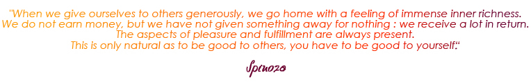

I am Grégoire du Boullay, 53 years old. I grew up in Switzerland and then in France. I am the Director of Development at Novalto in Paris. I am the proud father of 2 wonderful children. I adopted in 1997 my son, Lucas, in Vietnam and in 2002 daughter, Anouk, in Cambodia.
For a long time, the lives of children in poor countries deeply affected me. Finally, in 2014, I decided to launch my project.
The main catalysts that made me think about this project were the many changes in my personal circumstances. They allowed me to work on myself, my priorities and my values. I became aware of the meaning of life, « my life ». This self-awareness allowed me to “find myself” and to not have any regrets by setting up a project near and dear to my heart.
I was raised in a family where trying and succeeding were extremely important However, I did not follow the traditional education system. I stopped my education after completing my Bac. Then, I decided to return to school at the age of 40 when I got my Executive MBA at HEC.
Immersed in this entrepreneurship, I learned to master business skills and “start-up" fascinated me. So currently , I am helping and supporting other people’s projects as a consultant and / or investor and to carry out their business plans, while working as an employee.
Two significant events in my life have led to my decision to launch this project today :
First moment :
In 2002, I adopted my daughter, Anouk Mealea, in Cambodia. During this trip, I met Mr. And Mrs. Despalieres who had founded the association, « Pour un sourire d’enfants » in 1995. In order to better explain their inspiration, they took me to the rubbish dumps in Phnom Penh where hundreds of families lived in abject poverty.
Thirteen years after this event, I understood that it was now my turn to lead and support a humanitarian effort . First, we established an association, « Cambodge Enfance Développement » with some of the parents who had adopted children from the same orphanage. With this adoption process , I discovered a universe where I wanted to get involved and a means to make it happen.
Second moment :
While working for Novalto, I had the pleasure to meet and work with its founder. He had enormous trust in me, trust that I never had before. Thanks to him, I saw myself through his eyes and gained confidence in myself. I am forever grateful.
Albert Einstein said : « I have no special talent. I am only passionately curious. » . This quote speaks to me because it expresses how « passionately curious» I am.
I have been travelling around the world since I was 18 : USA, Canada, Mexico, Brazil, Peru, Egypt, Morocco, Kenya, Ivory Coast, China, Japan, Korea, Vietnam, Indonesia, Malaysia, Thailand, Laos, and most recently, Costa Rica.
These countries awakened my curiosity. They brought me so much in terms of the travelers and locals that I met, the different cultures and the shared smiles. A smile is a universal language! Nothing is better than a child’s smile which makes me happy!
I met Yehudi Menuhin in Switzerland when I was 14. This man impressed and inspired me by his “empathy” and his “goodwill”. I am particularly fond of these two words.
Indeed, these words resonate inside my head with the project that I am launching today. It is not just a donation or a limited involvement. It is to totally commit myself to a project devoted to children in need. I want to provide them with access to education and to school : to Learn. Throughout our lives, we learn. Regardless of my professional skills and my life experiences, I still have a lot to learn from these kids. Life is for learning!
Audrey Hepburn, at a crossroads in her life, said « As you grow older, you will discover that you have two hands, one for helping yourself, the other for helping others. ».
I want to give new meaning to my life and dedicate myself to helping vulnerable children.
I began with a quote by Spinoza and will end with him:

|